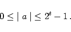

Inhalt Index DeskTop Bronstein

 Numerische Mathematik Nutzung von Computern Interne Zeichendarstellung Interne Zahlendarstellung
Numerische Mathematik Nutzung von Computern Interne Zeichendarstellung Interne Zahlendarstellung


Der Wertebereich für Festpunktzahlen mit den angegebenen Parametern ergibt sich zu
|  | (19.259) |
Festpunktzahlen können in der folgenden Form dargestellt werden: